In 1990 local historian Jack Bitner reached into the dark soil of an old Cornwall privy, pulling out shards of a broken shaving mug, thrown there 100 years previously, perhaps by the housekeeper of Robert H. Coleman, master of the great Coleman estate of Cornwall.
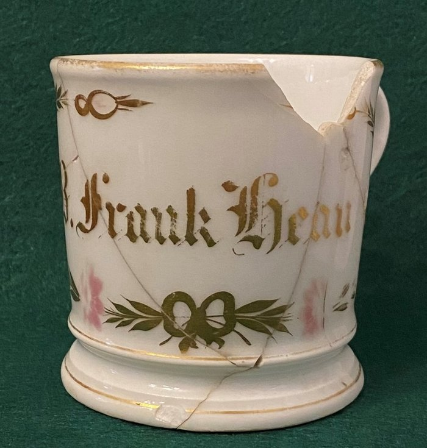
With meticulous care Jack cleaned and reassembled the mug. The name "B. Frank Hean" materialized before his eyes but as the name meant nothing to him, he wasn't troubled that he had not found the last piece to complete the artifact. Jack Bitner put the curiosity aside, figuring as historians do that someday it would fit neatly into another historian's mystery. Little would one expect it involved the discovery of a gunshot victim not in Lebanon, Pennsylvania but Melbourne, Australia on New Year's Day, 1896.
The reader may recognize the name "Hean" from a recent story involving an undercover Pinkerton agent investigating trouble in Robert H. Coleman's Cornwall stables. Capt. Hean served an unassuming role in that story as Coleman's personal secretary and manager of various affairs of the estate. The bookends of Hean's life preceding and following that period bring to full color the tale of an interesting and troubled man.
Benjamin Franklin Hean was born in 1842, to John and Eliza (Goodyear) Hean. John was a superintendent of the Union Canal from Middletown to Lebanon. Hean's grandfather John Hean, Sr. came from County Cornwall, England to build the tunnel at Westmont near Lebanon.
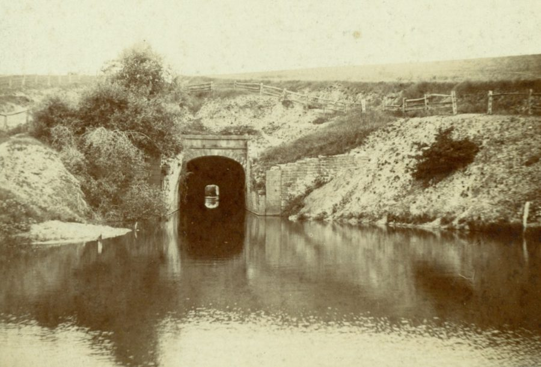
A millworker as a young man, Benjamin took up arms in the Civil War, enlisting on September 21, 1861 in the Pennsylvania 93rd regiment as a private. He was quickly promoted to sergeant and a year later to 1st Lieutenant.
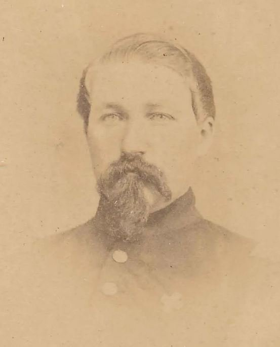
In May 1863 he was wounded at Chancellorsville, the battle considered to be Robert E. Lee's greatest victory (and the death of Stonewall Jackson). A few months later when the victorious Lee confronted the Union army at Gettysburg Hean was still recovering from his wound in hospital. But two years later in April 1865 he was recognized for meritorious action at the "Breakthrough" Battle at Petersburg (Lee surrendered to Grant one week later). Hean was discharged in June of 1865 and though later brevetted Major in recognition of his service, he was often known as "Captain" B. F. Hean. In 1884 he would take part in the design and dedication of his regiment's monument at Gettysburg.
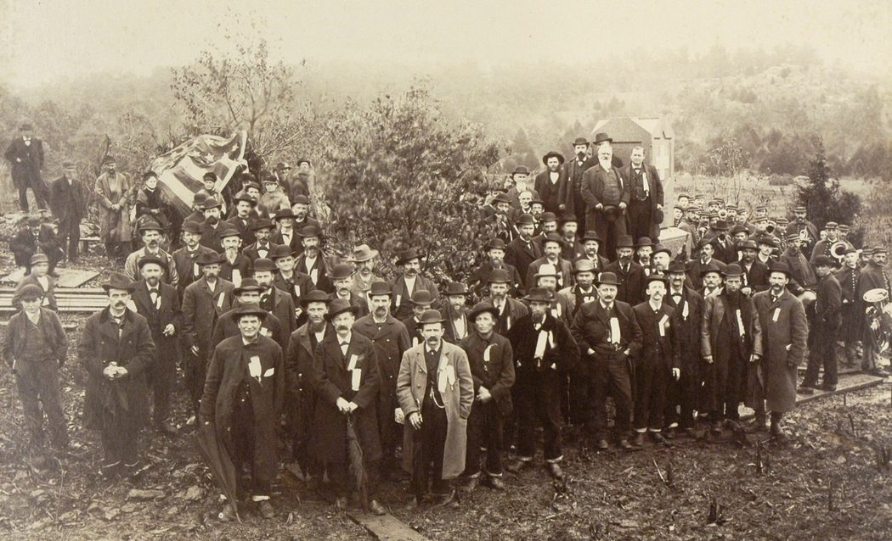
In one relevant detail concerning his military service, Hean had his arm tattooed with an American flag and his name, providing means of identification in case of being wounded.
Returning home, he apparently returned to work at the Union Waterworks and by 1869 was living on Cumberland Street and listed in the city register in various professions as salesman, clerk, and by 1875 employed at Lemberger's apothecary on old Market Square opposite the Lebanon National Bank. By 1879 he shows up in historical records as living in Cornwall with the Wm. Boyd family and serving in various roles as Robert Coleman's clerk, secretary, and farm manager. He spent the 1880's as Robert Coleman's trusted agent, assisting him with the National Guard Encampment of 1887 and the Pinkerton affair at Coleman's stables in 1888. By 1890 according to the Lebanon Courier he was serving as Coleman's manager of the "new" Colebrook furnace in Lebanon, the Anthracite Furnace at Cornwall, and the Lochiel furnace in Harrisburg.
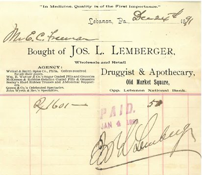
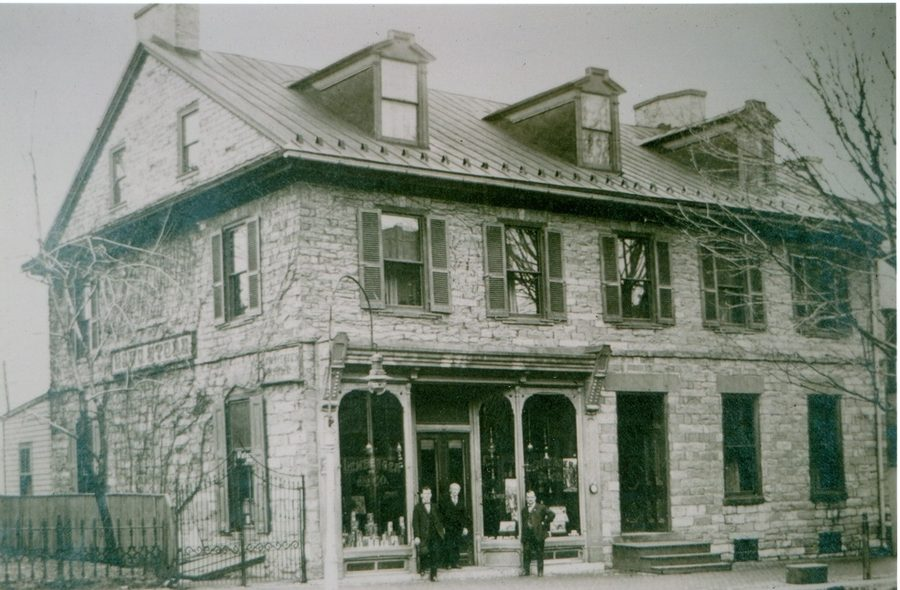
The 1890's marked a new chapter for Hean. He left Robert H. Coleman's employ. He was described in the press as one of the most prominent and popular men in the city and county. Hean lived in relative luxury at the Lebanon Valley House at N. 8th and Scull Streets across from the train depot.
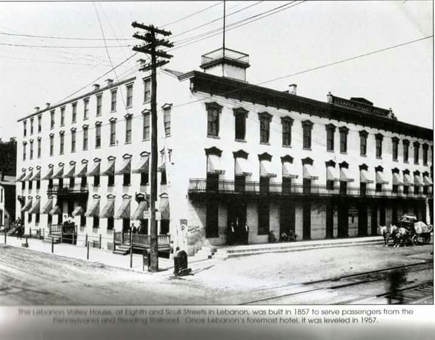
Hean was elected to a term as prothonotary in 1892. When Christian Bomberger replaced him in 1895, Hean became his appointed deputy (Hean had also been elected chairman of the county Republican Party). Soon after, Bomberger had become seriously ill and deputy Hean stepped up to assume his duties.
This author now understands but still struggles to correctly pronounce the word "prothonotary," which in Pennsylvania is the chief clerk and recordkeeper for all civil cases of the court system. Most states have instead a Clerk of the County Court of Common Pleas. "Prothonotary" is Latin for "first notary." According to Lebanon County's Department website, the prothonotary is the chief filing office for the Court of Common Pleas of Lebanon County in civil, family, protection from abuse, judgment, and lien matters.
On October 31, 1895 the Daily News carried a story expressing growing concern about the absence of Lebanon's deputy prothonotary. Nine days earlier on the evening of October 22nd, Hean had received a telegram, and upon reading it nonchalantly tucked it in his pocket and remarked to E. M. Boltz, proprietor of the hotel that he must leave immediately for Pittsburg that evening on a business matter that would keep him away several days. Within the hour he came back downstairs from his room carrying a small satchel, his departure witnessed by Lizzie, a hotel employee, and local citizen George Kreitzer. He crossed the street to the Pennsylvania and Reading depot and left town on the 11:20pm westbound train.
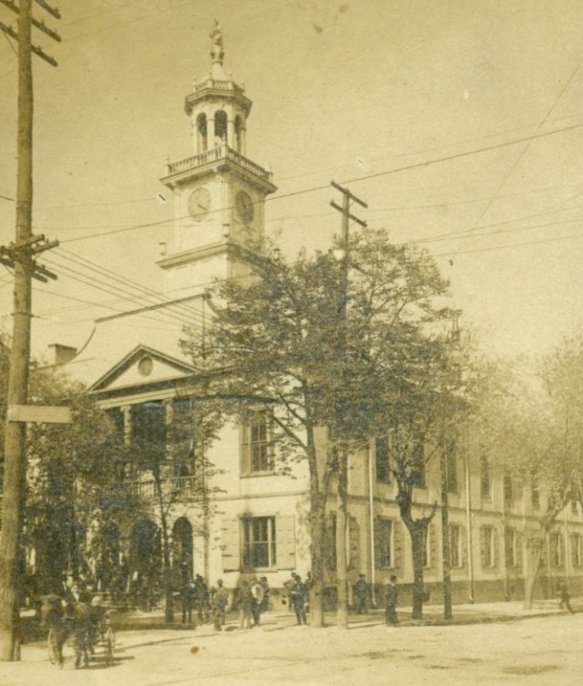
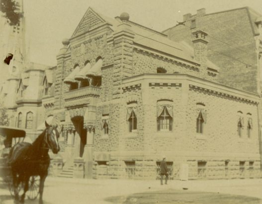
Little notice was taken until the following Monday, October 28 when the Lebanon County Court issued an order to release payment in connection with a recent settlement of $2,727. With Hean's absence several attorneys proceeded directly to the People's bank to arrange withdrawal of the funds. Imagine everyone's surprise when the cashier discovered there were no funds on deposit, funds which Hean presumably had deposited almost two years prior in January 1894.
Gossip regarding missing funds and Hean's unexplained disappearance mounted quickly. The newspaper characterized Hean, previously as one of the town's esteemed citizens, as a desperate man sitting atop a volcano that had finally erupted, though apparently with Hean now safely away from harm.
Suspicions led to further investigations and disclosures, which made clear the deputy prothonotary had been scheming for an extended period and had indeed left town a refugee from justice. Two other cases of fraudulent behavior were identified amounting to a total of nearly $5,000 missing over two years. When Hean stepped aboard the train, he was likely carrying about $2,500 in his satchel. Later tallies put the amount embezzled in excess of $10,000. Based on inflation that would be worth over $360,000 today.
Friends and citizenry wondered how Hean, with an $800 yearly salary had fallen to such temptation. As the newspaper reported, Hean previously enjoyed great credit and confidence of many, and had little difficulty getting endorsements. Indeed, one attorney said "if Major Hean had gone into business and needed money I would have been willing to endorse him for $20,000."
As one expects, talk grew — that he had been living too extravagantly, "too fast," well beyond his income, even as an unmarried man. Some speculated that he had debts from investing in the Moldoc (California) gold mine. His friends felt utterly betrayed.
We might speculate as well. Imagine a poor young boy, sent off to war, distinguishing himself with heroism, wounded in battle, perhaps suffering what we now call post-traumatic stress, returning home, enjoying the confidence of the region's wealthiest man. Was he unable to sustain his extravagant lifestyle after leaving Coleman's employ? Did that relationship end abruptly, triggering resentment and jealousy? Did Coleman's own demise and departure in 1893 disappoint him? Had Hean's taste of success and power in local politics corrupted him?
The newspapers never resolved those questions, but they were busy with another "Hean Story" a few months later.
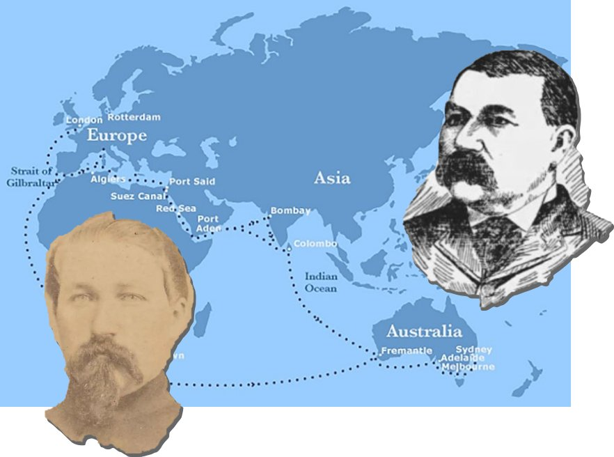
When Hean left Lebanon he actually might have travelled westward to Pittsburg as he told witnesses, but then reversed direction almost immediately to make his way to London. There he resided briefly at the Great Eastern Hotel. Somewhere along the way he had acquired a trunk and a complete wardrobe of gentleman's accessories. From there he sailed to Melbourne, Australia. As he traveled, he identified himself to others as Frank Herne of Pittsburg, a manager of iron works. Given his tenure with Robert H. Coleman he thus represented himself most credibly.
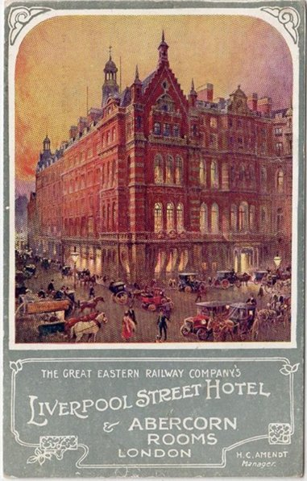
He arrived in Melbourne the 26th of December on the mail steamer "Orient" from London. He could not have stayed long in London given the transit time from America, and then perhaps at least five weeks from London to Australia.
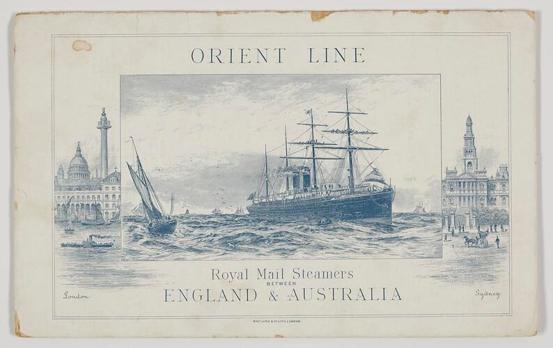
Whatever money he carried in his satchel from Lebanon did not last long because on the trip to Melbourne he borrowed $20 from John D. Campbell, a fellow traveler he had befriended, promising to repay when he received his remittance from Pittsburg. He had apparently kept enough for rail and steamer fare, but how he spent or disposed of the remaining money remains a mystery. The gold watch he had while on the steamer was not found among his personal effects, presumably pawned to provide his needs or to repay his travel companion.
In a few short days, the odd story of B. F. Hean took another bizarre twist. To the shock of citizens of Melbourne, and later to citizens of Lebanon, Pennsylvania, his body was discovered New Year's morning on St. Kilda beach, with a gunshot wound to the head.
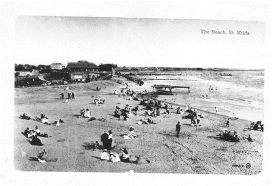
On that Wednesday morning, a warm New Year's day (Australian summertime), a gentleman named Thomas Jarvis walked the St. Kilda beach of greater Melbourne. Upon finding a body on a bluff, Jarvis located a constable.
The initial report described the body as very stout in build, dressed in black paget coat and vest, striped tweed trousers, white cotton drawers, white canvas shoes, black cotton socks with red stripes, white straw hat with red and blue band, white shirt with the initials B. F. H. on cuffs, Smith, Gray & Co. New York and Brooklyn on band of shirt, and white cotton ringlet.
The left forearm of the body was tattooed in red and blue Indian ink with the figure of an American soldier holding the American flag, underneath was printed the name "B. P. Hean" (the amateur quality of his civil war tattoo having left the middle initial in doubt).
Property found on the deceased included a silver mounted pipe, a cigar holder, a nickel match box, folding scissors, a pocket knife, pocket comb, pocket corkscrew, 2 small keys, 1 pince-nez eye glass, 4 Brummagem shirt studs, 2 solitaires, and seven pence farthing in coppers and a three-penny bit.
Given further investigation by the constable, the body was identified as "Frank Herne of Pittsburg" by the several men who had met him. Dr. Richard Youl, coroner, and Senior-Constable Davidson conducted an inquest on the sixth of January, from which the following timeline is reconstructed.
His Last Few Days
As reported by John Campbell, his new friend on the Orient steamer, they arrived Thursday in Melbourne. Both checked into the elegant Grand Hotel (now the Hotel Windsor) on Spring Street. Both men stayed through the weekend.
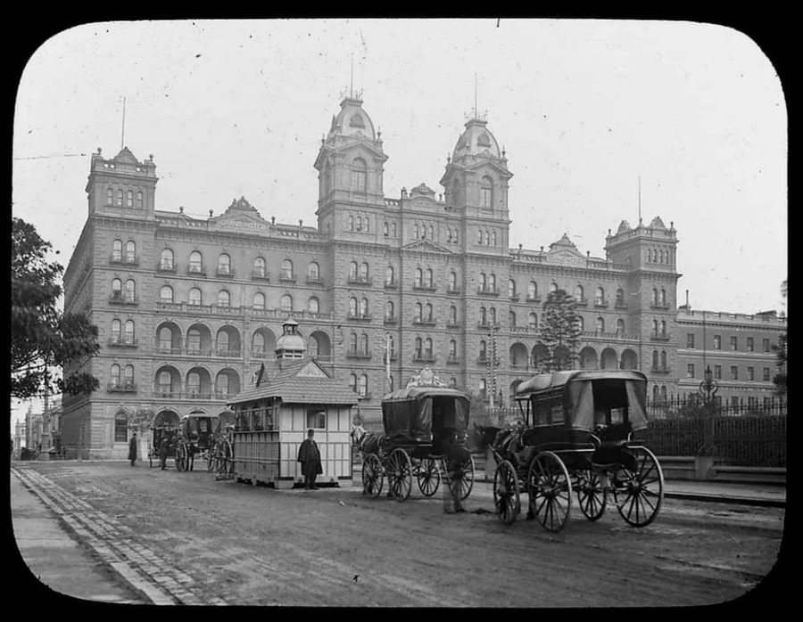
Both men checked out and went their separate ways; Campbell to the Piccadilly Hotel and "Herne" to Her Majesty's Hotel. They met twice at the post office, apparently Hean appearing to make good on his debt. Campbell testified that when they parted at 8:30pm Herne was "sober." "I never again saw him alive; the revolver now produced belonged to him; he wore a gold watch; I have not seen it for three weeks."
Frederick Pollock, the manager of Her Majesty's hotel stated that on checking in, "Herne" went to his room and having received his baggage he locked the door. Later he left, "I never saw him again alive; he never returned to his room so far as I know; on Wednesday [1 January] I reported him missing to the police. On the next day Senior-Constable Davidson told me he thought the man was in the morgue; I went to the morgue and identified him; he had never slept in the bed."
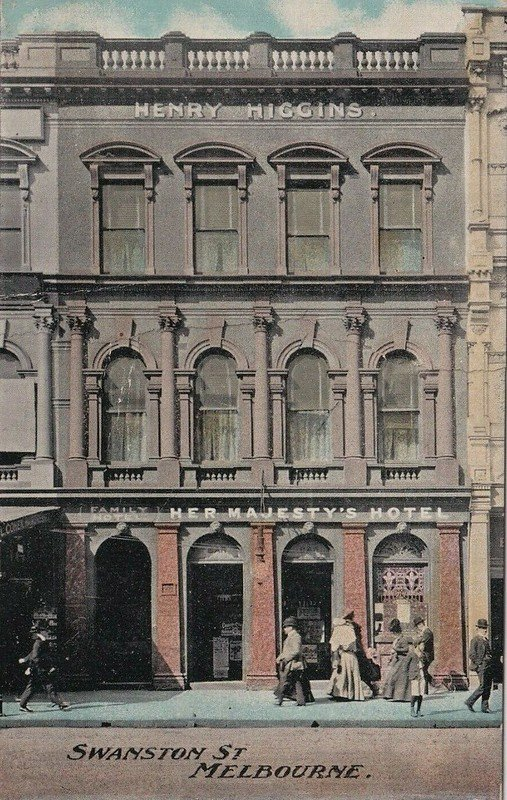
A gardener residing at St. Kilda, Frederick Sefton testified that "Herne" was seen in the afternoon of this day at the Marine Parade [the road parallel to the beach]. He had two tarts and a bottle of ginger ale. They saw each other again that evening on the Marine Parade and discussed the fact that Sefton was going fishing in the bay. When asked the time, Herne replied he did not have the time on him but wished Sefton "to catch more fish than he could carry." When Sefton returned later that evening, Herne was sitting on a bluff, the same as where his body was found the next morning. That kind wish may have been Hean's last conversation with another human being.
A gentleman of St. Kilda, Thomas Jarvis was walking the beach at 6:30am near the foot of Dickens Street and would have missed him until a man on a bicycle called his attention to a body lying on the beach. He appeared dead from a head wound, with a revolver in his right hand.
Responding to the call, police constable Patrick Keaney investigated the scene and confirmed Jarvis's report. The body had a pipe and "other trifles" including ten pence farthing, but no watch. He noted the tattoo "B. P. Hean."
The inquest performed by Richard Youl, coroner concluded based on the testimony that "Frank Hern" shot himself, "there being no evidence to show the state of his mind." The Melbourne Herald-Standard reported the story of a man who "died with the year," having premeditated suicide "for he hovered at the site for nearly twenty-four hours."
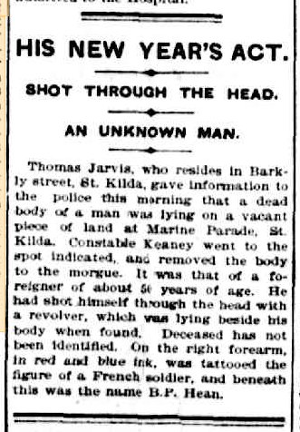
The effects belonging to the deceased were all handed over to the curator of the intestate estates of deceased persons. The body of deceased was buried in the Melbourne general cemetery as a pauper. The value of the estate was not more than a few pounds sterling. One remarkable thing in connection with the deceased and his effects when searched was that no papers whatever were found. One large traveling trunk bears the label "Frank Hearn, Great Eastern Hotel, London."
In addition to the property found on the body the following items were found in his room at Her Majesty's hotel: one box, containing dressing gown, 2 felt hats, dress suit, 6 white shirts, 13 pair cuffs, 29 collars, 17 cotton handkerchiefs, 1 silk handkerchief, 1 silk scarf. Small brown leather bag, containing 4 cricketing shirts, 5 pair drawers, 12 pair socks. Brown leather bag, containing menthol inhaler, nail brush, 4 pipes, overcoat, 2 gold platinum studs, 4 gold wash studs, 14 foreign silver coins, enameled scarf pin (scarf-pattern).
The story lingered a few more months. Based on initial correspondence to Pittsburg regarding "Frank Herne" the coroner began receiving correspondence from several authorities and citizens of Lebanon who had been trying to locate Hean. The Daily News of Lebanon was more than proactive in the investigation, having sent the drawing of Hean to the coroner, which confirmed his ultimate identification as B. F. Hean. The News proudly and repeatedly informed its readers how diligently they had been pursuing the matter.
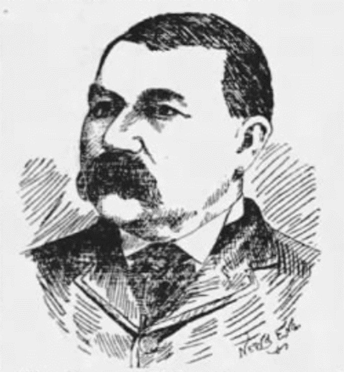
In a letter to the proprietors of the Daily News, "Messrs. Schropp, Light & Schropp, 24 South Eighth Street, Lebanon U.S.A" Dr. Youl said he had not the slightest doubt that the deceased was "your Major B. F. Hean." ["The News" was the first daily paper of Lebanon issued ever since its establishment, in 1872, by the Smith Bros. In 1876 Reinhard and Sharp bought out the original proprietors, who subsequently in 1892 were bought out by Schropp, Light and Schropp (per Rev. P. C. Croll, 1909).]
On a lighter note, when Senior-Constable Davidson had contacted Pittsburg, Dr. Youl received a batch of correspondence addressed to "Mr. Richard Soule, Osborne, Australia." The Melbourne paper wryly reported: "Dr. Youl, the veteran city coroner, might well have exclaimed 'And is this fame?' … The letters turned out to be communications from America—where it is evident the authorities are not experts in calligraphy …"
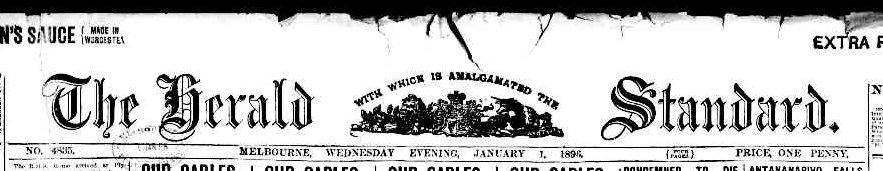
Getting more redundant inquiries in the mail than he could respond to, Dr. Youl chose to correspond only with the Daily News, asking them to relay information to the other parties in Lebanon. He sent along several Melbourne newspaper articles and requested that they reciprocate so that he would have the information for his files. Among the articles sent by the Daily News was the drawing that aided Hean's identification. The Herald Standard published its final account of the story on the 28th of May, confirming "Hearn" as Hean.
Epilog — 27 January 1898
Two years later the Daily News checked in on the Hean story one more time. In 1889 through the agency of George N. Reynolds of Lancaster, Hean had taken a $2,000 life insurance policy with Northwestern Mutual. The News reminded its readers of the story, in which Hean had been found dead in "Osborne, Australia."
Although Major Hean's creditors had rather quickly seized that insurance policy it took two more years to settle, the insurance company refusing to pay until identification could be made positive. Furthermore, Northwestern Mutual required the creditors to continue paying premiums on the policy, refundable on settlement. On this date the creditors had some satisfaction upon receiving the proceeds of the policy.
Afterword
Slow down for a minute, turn off your busy 21st century mind and come alongside a 19th century man. For a few minutes, be Benjamin Franklin Hean. A man who grew up too quickly in a nation at war with itself. Who paid the price with wounds to his body yet rose to acts of heroism. Who served honorable jobs as an apothecary clerk, and trusted aid to Robert H. Coleman, one of the most successful young men of the 1880's. A manager of a furnace during the emerging age of steel. A respected citizen of Lebanon in the gay 90's. A clerk of the court, tempted by ill-gotten gain. Discovered for his foolish crime. The rhythm of the rails beneath him as he fled to perceived safety, ashamed of his fallen state. The days at sea before arriving in London. Rebuilding his life and possessions in a hotel and choosing as others had to emigrate to Australia. For five weeks during his passage to Melbourne he saw sights never experienced or imagined before in his life. A new world of Portugal, Gibraltar, Spain, Italy, Greece, Egypt, India.
A diary of another traveler on the Orient records the happy days at sea, amusements on deck, the daily hymns, Scriptures and uplifting church services afforded the passengers. Hope, on arrival in Melbourne, as this traveler wrote, "I am a 'New Chum' to the friends here, but I am certain already that the good feeling, disposition, and kind hospitality evinced by the Victorians will soon make me feel an 'Old Chum.'"
Not so for B. F. Hean as he sat alone on the beach for 24 hours, sipping ginger ale and reflecting on life. Although the answer he sought had been very near on the ship, he missed the opportunity to find personal redemption and return home. Hope eluded the man who had sought peace half-way around the world.
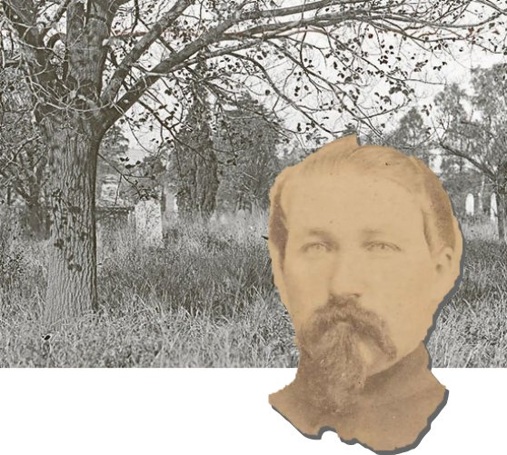
New Year's Day 1896, St. Kilda Beach, Melbourne, Australia. On viewing the body lying in the sand, police constable Patrick Keaney noticed a curious set of footprints and a faint trail of blood proceeding directly away down the beach into the surf. A thought to be certain to write that into his report slipped from his mind as he turned to determine the man's identity…
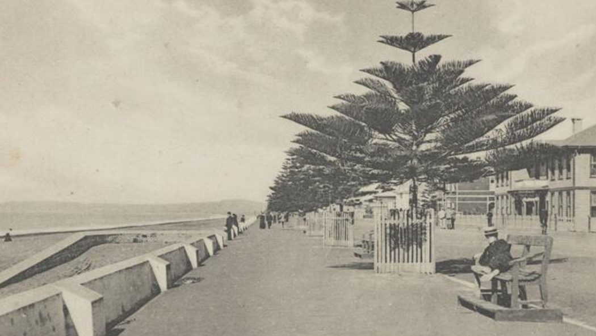
As it turns out Hean did not sit alone on that warm St. Kilda beach for those last hours of December 1895. Late in the day, as he gazed into the waves reflecting on his circumstances a man walked up the bluff and quietly sat beside him. "I've been looking for you Frank…" he murmured.
Sipping from his ginger ale, Hean scowled at the man. For a moment he thought he recognized the eyes, "Do I know you?"
The man waited for recognition before speaking. "I held that bloody bandage against your wound in Chancellorsville. Your life almost slipped through my fingers."
"I thought maybe I'd seen you at Petersburg with Lee's army," Hean replied.
"Yeah — that's where you shot me with that revolver of yours."
The weary, 53-year-old Hean noticed the moist blood stain but didn't react, not in the mood for much talk. For the longest time he just sat in the warm sand and gazing into the blue water, a gentle breeze cooling his face. The stranger sat quietly with him.
"What am I doing here!" Hean finally erupted. "These aren't my people. The iron business here has failed. I'd have to be a sheep rancher."
"It's a noble profession."
"Well, I can't start all over — I've got no money."
They sat quite a while as the evening sun dipped into Port Phillip Bay. Looking down he saw the last of the two tarts he had bought with his remaining coins. With a grunt, he shifted in the sand and picked it up. "Here, you must be hungry."
Giving thanks, Jesus took it, broke it and handed a piece back to Hean. A brief smile passed Hean's lips. He stole a glance at the stranger before returning to squint into the fading sun. Together, they chewed silently, enjoying a last meal.
"You're a good man, Frank Hean." "No, I'm not — I've done some …things."
"I know — but back in London you showed that beggar such kindness, feeding him and giving him your satchel."
"That was you, too I suppose?" "Mm-mmm. And I heard you calling me from the deck of the ship."
More silence, then "Where did I go wrong?"
"You let temptation get the better of you."
"After all of — (sighing with exasperation) this life, I just wanted something for myself," he confessed. "Was that so wrong?"
More time passed, "Here…" Hean chuckled, handing over the bottle of ginger ale. His friend took it with ceremony, holding it up to the beauty of sky and sea. A passing gull called out. Taking a deep draft he sighed and handed the rest back to Hean, who polished it off and laid the empty bottle in the sand.
Later that evening they watched the clear night sky as the planets and stars began to shine. The southern lights shimmered like a heavenly veil.
"Thanks for being, for coming here I mean… I've wasted everything. I have no one."
"You have John Campbell. He took kindly to you on the Orient."
"No, I just took him for a fool and took his money."
"I know John, he spoke to me about you. He's concerned — He's walking the Marine Parade right now hoping to find you."
"No use, I can't pay him back."
"John doesn't mind; he's glad to help. …And, he needed a companion on that ship as much as you did. You were kind to him."
Church bells tolled at midnight, then the sound of firecrackers and cheering voices wafted over the bluff.
"Frank, it's time you went home to Lebanon," Jesus said to the prodigal.
"I can't… I have no money"
"I know the rector at that church, tell him your story and he will gladly get you home."
"I can't …, the folks in Lebanon … I'm sure to go to jail."
"More than likely…"
"I'll never have the life I had."
"You're right, it will be a different one… but a new one."
"I can't… too ashamed…"
Much later still, the night sky began to glow ever so slightly. The colors of the beach warmed.
Frank stole a sideways glance at his companion. Picking up the revolver, "I just can't…"
"Frank, don't." But with a flash Frank was gone.
Jesus wept.
He stood, lifted Frank's soul in his arms and walked down to the water.
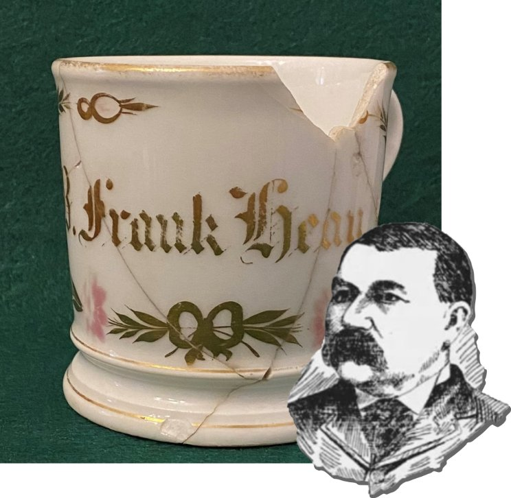
For Frank, and Hugh, and Keith, and Brian, and …
The author gratefully acknowledges local historian and friend Michael Trump for much of the background material on B. F. Hean from newspaper archives, many photographs as well as the photo of B. F. Hean's shaving mug.
Details of Hean's military service were used by permission from Edward S. Alexander's article, "Tattooed in Lieu of Dog Tags: The Identity of Capt. B. Frank Hean," posted on the Emerging Civil War website, March 10, 2016.
The author faithfully spelled "Pittsburg" as it was found in the Daily News and Melbourne papers in the 1890s.
Background on the origin of the name "St. Kilda": marvmelb.blogspot.com.
Credit is also due for assistance from the Cornwall Iron Furnace, and James Polcynzski, president of the Cornwall Iron Furnace Associates and author of the book "Souls of Iron" (2022).
Originally published as a two-part series on LebTown, July 26 – August 2, 2022.